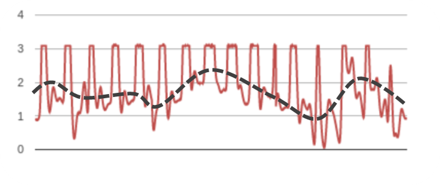
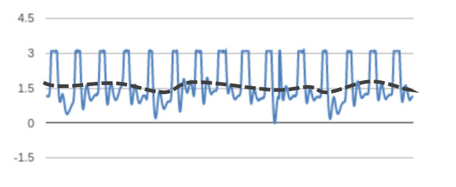

Evidence and Testimonials
Aromatherapy Works
Essential oils have been used for therapeutic purposes for nearly 6,000 years
Studies have shown that aromatherapy might have health benefits, including: relief from anxiety and depression, improved quality of life, particularly for people with chronic health conditions. - Mayo Clinic
Aroama makes a difference in stressful situations.
If you've read up on how Aroama detects stress, the graphs below will look a little familiar. To simplify: the straighter the dashed line following the average value of each heartbeat, the less anxious the person is. We put people in stressful situations and recorded their heart signals with and without the in the moment help of Aroama.
Stressful situation
Stressful situation with Aroama.
These results show the aromatherapy side of Aroama making a clear difference in alleviating stress and anxiety.
What do our early users say?
"I've intentionally put it on every day since I got it, and that's a big deal for me."
"My therapist ALWAYS tells me to write down when and where I'm stressed, and I never remember. This would be a huge help."
"I'd wear it practically 24/7, even when sleeping."
"I used it at a packed concert, and while voting. Both situations are social, and stressful, but the aroma helped"
" I was kind of skeptical at first, but after a while I realized it was really nice to have something that smells nice that you can use at any moment. I have some anxiety issues, and breathing often helps me calm down. The wristband did motivate me to breath more. When I started using it, the timing was actually perfect."
"While it didn't eliminate the anxiety completely, the aroma did give me this pleasant and relaxing feeling."
"The aroma gave me a nice feeling and made the environment I was in feel nicer because of the nice smell. "
"Awesome. I've never done aromatherapy not on-the-go, but it was a nice wearable to have as a comfort when you least expect you need it"